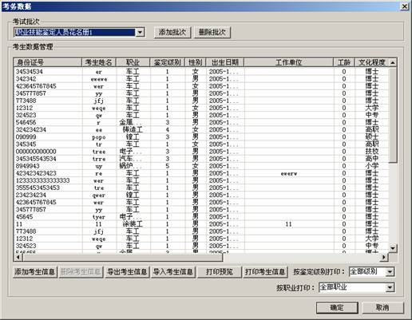
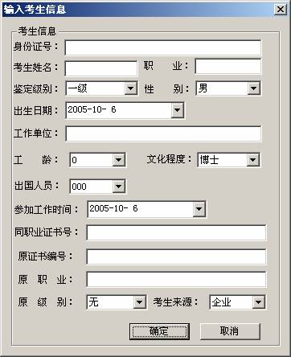
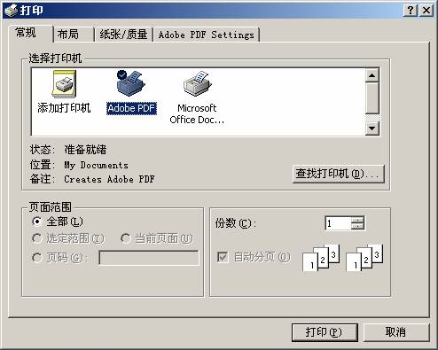
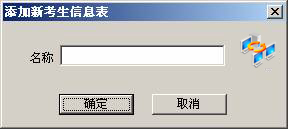
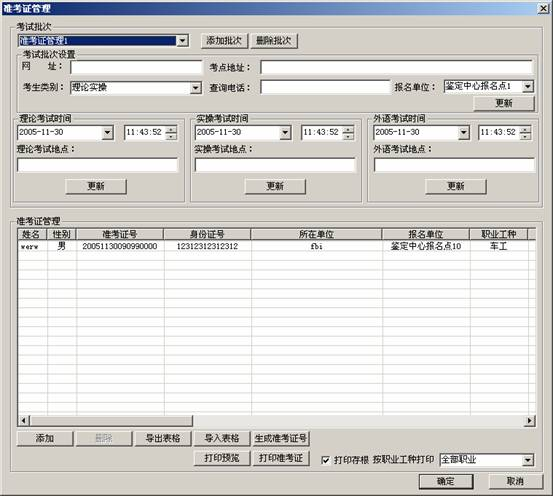
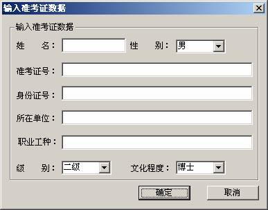
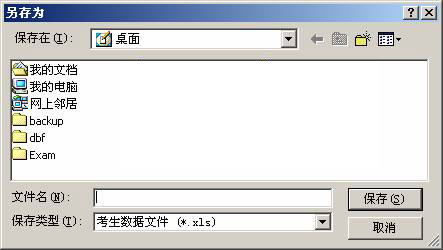
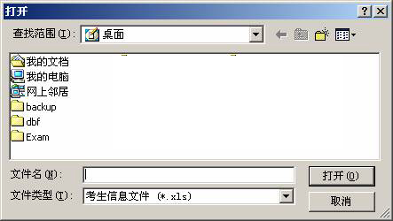
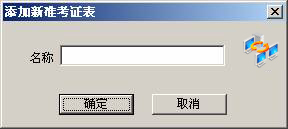
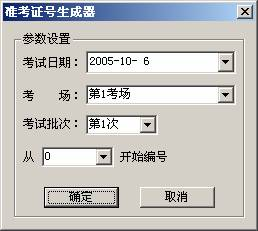

| 考务系统 |
| 考生数据管理使用说明 |
该数据库的字段名分别为：身份证号,考生姓名,职业,鉴定级别,性别,出生日期,工作单位,工龄,文化程度,出国人员,参加工作时间,同职业证书号,原证书编号,原职业,原级别,考生来源
1.启动SSCNC SERVER
2.单击菜单栏中的“考务系统”，在弹出的菜单中选择“考生数据管理”，弹出“考生数据”对话框：

3.在对话框中添加考生信息：
a.单击“添加考生信息”按钮，弹出“添加考生信息”对话框：

b.输入考生信息（身份证号和姓名必添，身份证号必须是有效身份证号），输入完毕单击确定后返回“考生数据”对话框。
3.单击“删除考生信息”按钮删除一条考生信息记录，删除后点“确定”按钮。
4.单击“导出考生信息”按钮弹出“另存为”对话框，在对话框中输入文件名，单击保存后数据被导出。
5.单击“导入考生信息”按钮弹出“打开”对话框，选择要导入的文件后单击打开即可导入。
6.单击“打印考生信息”按钮，弹出“打印”对话框，在对话框里进行打印设置（选择横向打印）单击“打印”按钮，开始打印。

7.添加和删除考试批次：
a.单击“添加批次”按钮，弹出“添加新考生信息”对话框，输入一个名称，单击确定。

b. 单击“删除批次”按钮，弹出删除考生信息对话框，询问是否删除，单击“是”按钮确定删除，单击“否”按钮。
| 准考证管理使用说明 |
该数据库的字段名分别为：姓名,性别,准考证号,身份证号, 所在单位,报名单位,职业工种, 级别,考点地址,文化程度, 考生类别,理论考试时间,理论考试地点, 实操考试时间,实操考试地点,外语考试时间, 外语考试地点,网址,查分电话
1.启动SSCNC SERVER
2.单击菜单栏中的“考务系统”，在弹出的菜单中选择“准考证管理”，弹出“准考证管理”对话框：

3.在对话框中添加考生准考证数据：
a.单击“添加”按钮，弹出“输入准考证数据”对话框：

b.输入考生准考证数据（身份证号和姓名必添，身份证号必须是有效身份证号），输入完毕单击确定后返回“准考证管理”对话框。
3.单击“删除”按钮删除一条考生准考证记录，删除后点“确定”按钮。
4.单击“导出准考证”按钮弹出“另存为”对话框，在对话框中输入文件名，单击确定后数据被导出。

5.单击“导入准考证”按钮弹出“打开”对话框，选择要导入的文件后单击确定即可导入。

6.单击“打印准考证”按钮，弹出“打印”对话框，在对话框里进行打印设置（可以选择是否打印存根）单击“打印”按钮，开始打印。

7.添加和删除考试批次：
a.单击“添加批次”按钮，弹出“添加新准考证表”对话框，输入一个名称，单击确定。

b. 单击“删除批次”按钮，弹出删除考生准考证表对话框，询问是否删除，单击“是”按钮确定删除，单击“否”按钮。
8.在“准考证管理”对话框里的“准考证管理”列表中可以对记录进行修改：单击单元格即可修改。
9.单击“生成准考证号”按钮，弹出“准考证号生成器”对话框，可以根据需要进行设置，设置完毕单击确定即可。

10.单击“准考证管理对话框”上的更新按钮可以对所有考生的准考证的“网址”，“考生内别”，“考点地址”，“查询电话”，“报名单位”，“理论考试时间”，“理论考试地点”，“实操考试时间”，“实操考试地点”，“外语考试时间”，“外语考试地点”进行统一更新。